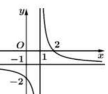
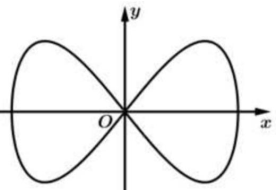
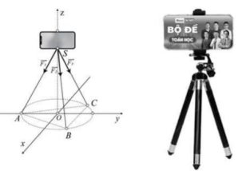
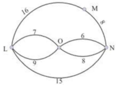
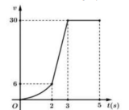
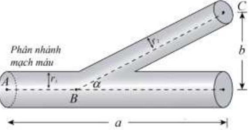

ĐỀ THI TOÁN - ĐỀ SỐ 53 HOT
Phần I: Trắc Nghiệm Nhiều Lựa Chọn
Tóm tắt kiến thức: Giới hạn của dãy số
Giới hạn của dãy số \( \lim_{n \to \infty} \frac{1}{an + b} = 0 \) nếu \( a \neq 0 \), vì mẫu số tiến đến vô cực.
Câu 1:
\( \lim_{n \to \infty} \frac{1}{5n + 3} \) bằng
Chọn đáp án:
Lời giải:
Ta có: \( \lim_{n \to \infty} \frac{1}{5n + 3} = \lim_{n \to \infty} \frac{1}{n \left(5 + \frac{3}{n}\right)} = \frac{\lim_{n \to \infty} \frac{1}{n}}{\lim_{n \to \infty} \left(5 + \frac{3}{n}\right)} = \frac{0}{5 + 0} = 0 \).
Đáp án: A.
Tóm tắt kiến thức: Độ dài nhóm của mẫu số liệu
Độ dài nhóm của mẫu số liệu ghép nhóm được tính bằng hiệu giữa đầu mút phải và đầu mút trái của nhóm: \( b - a \).
Câu 2:
Điểm kiểm tra giữa học kỳ I của lớp 11T được thống kê theo bảng sau:
| Số điểm | \([0; 2)\) | \([2; 4)\) | \([4; 6)\) | \([6; 8)\) | \([8; 10)\) |
|---|---|---|---|---|---|
| Số học sinh | 1 | 3 | 8 | 18 | 10 |
Độ dài các nhóm của mẫu số liệu là
Chọn đáp án:
Lời giải:
Gọi \( a \) là đầu mút trái, \( b \) là đầu mút phải của các nhóm. Mỗi nhóm có độ dài: \( b - a = 2 - 0 = 2 \) (ví dụ: \([0; 2)\), \([2; 4)\), ...).
Đáp án: A.
Tóm tắt kiến thức: Tâm đối xứng của hàm số phân thức
Đối với hàm số \( y = \frac{ax + b}{cx + d} \), tâm đối xứng là giao điểm của các đường tiệm cận ngang và dọc.
Câu 3:
Cho hàm số \( y = f(x) = \frac{ax + b}{cx + d} \) có đồ thị như hình vẽ sau:

Tâm đối xứng của đồ thị hàm số có tọa độ là
Chọn đáp án:
Lời giải:
Tâm đối xứng của đồ thị hàm số \( y = \frac{ax + b}{cx + d} \) là giao điểm của tiệm cận đứng và tiệm cận ngang. Từ đồ thị, suy ra tâm đối xứng là \( (1; -1) \).
Đáp án: D.
Tóm tắt kiến thức: Độ dài vector
Độ dài của vector \( \vec{a} = (x; y; z) \) được tính bằng: \( |\vec{a}| = \sqrt{x^2 + y^2 + z^2} \).
Câu 4:
Trong không gian \( Oxyz \), cho vector \( \vec{a} = (1; 0; 3) \). Độ dài của vector \( \vec{a} \) là
Chọn đáp án:
Lời giải:
Độ dài của vector \( \vec{a} = (1; 0; 3) \): \( |\vec{a}| = \sqrt{1^2 + 0^2 + 3^2} = \sqrt{1 + 9} = \sqrt{10} \).
Đáp án: D.
Tóm tắt kiến thức: Bất phương trình logarit
Để giải bất phương trình \( \log x \leq a \), ta có: \( x > 0 \) và \( x \leq 10^a \).
Câu 5:
Tập nghiệm của bất phương trình \( \log x \leq -2 \) là
Chọn đáp án:
Lời giải:
Bất phương trình: \( \log x \leq -2 \).
Điều kiện: \( x > 0 \).
Ta có: \( \log x \leq -2 \Leftrightarrow x \leq 10^{-2} = \frac{1}{100} \).
Kết hợp: \( 0 < x \leq \frac{1}{100} \), nhưng vì đáp án yêu cầu khoảng mở tại \( \frac{1}{100} \), tập nghiệm là \( (0; \frac{1}{100}) \).
Đáp án: C.
Tóm tắt kiến thức: Tính đơn điệu của hàm số
Hàm số \( y = f(x) \) đồng biến trên khoảng \( (a; b) \) nếu \( f'(x) > 0 \), nghịch biến nếu \( f'(x) < 0 \).
Câu 6:
Cho hàm số \( y = f(x) \) có đạo hàm \( f'(x) = -x^3, \forall x \in \mathbb{R} \). Hàm số đã cho đồng biến trên khoảng nào sau đây?
Chọn đáp án:
Lời giải:
Đạo hàm: \( f'(x) = -x^3 \).
Tìm nghiệm: \( f'(x) = 0 \Leftrightarrow -x^3 = 0 \Leftrightarrow x = 0 \).
Xét dấu \( f'(x) \):
- Khi \( x < 0 \): \( -x^3 > 0 \Rightarrow f'(x) > 0 \Rightarrow \) hàm đồng biến.
- Khi \( x > 0 \): \( -x^3 < 0 \Rightarrow f'(x) < 0 \Rightarrow \) hàm nghịch biến.
Vậy hàm đồng biến trên \( (-\infty; 0) \).
Đáp án: C.
Tóm tắt kiến thức: Tích phân hàm lượng giác
Tích phân: \( \int \cos x \, dx = \sin x + C \). Giá trị xác định: \( \int_a^b \cos x \, dx = \sin x \big|_a^b = \sin b - \sin a \).
Câu 7:
\( \int_{\frac{\pi}{7}}^{\frac{\pi}{3}} \cos x \, dx \) bằng
Chọn đáp án:
Lời giải:
Ta có: \( \int_{\frac{\pi}{7}}^{\frac{\pi}{3}} \cos x \, dx = \sin x \big|_{\frac{\pi}{7}}^{\frac{\pi}{3}} = \sin \frac{\pi}{3} - \sin \frac{\pi}{7} \).
Đáp án: A.
Tóm tắt kiến thức: Tập xác định của hàm số
Tập xác định của hàm \( y = a^x + \log_b (c - x) \) yêu cầu \( c - x > 0 \), tức là \( x < c \).
Câu 8:
Tập xác định của hàm số \( y = 5^x + \log_2 (3 - x) \) là
Chọn đáp án:
Lời giải:
Điều kiện xác định: \( 3 - x > 0 \Leftrightarrow x < 3 \).
Vậy tập xác định là \( (-\infty; 3) \).
Đáp án: D.
Tóm tắt kiến thức: Hình học không gian
Trong hình chóp, nếu cạnh bên vuông góc với mặt phẳng đáy, các mặt bên chứa cạnh đó sẽ vuông góc với đáy. Kiểm tra tính vuông góc giữa các mặt phẳng.
Câu 9:
Cho hình chóp \( S.ABC \) có đáy \( ABC \) là tam giác vuông tại \( B \) và cạnh bên \( SA \) vuông góc với mặt phẳng đáy. Phát biểu sau đây là sai?
Chọn đáp án:
Lời giải:
- \( (SAB) \perp (ABC) \): Đúng, vì \( SA \perp (ABC) \) và \( SA \subset (SAB) \).
- \( (SAC) \perp (ABC) \): Đúng, vì \( SA \perp (ABC) \) và \( SA \subset (SAC) \).
- \( (SAB) \perp (SBC) \): Đúng, vì \( BC \perp (SAB) \) (do \( BC \perp AB \) và \( BC \perp SA \)).
- \( (SAC) \perp (SBC) \): Sai, vì không có điều kiện nào đảm bảo \( (SAC) \) vuông góc với \( (SBC) \).
Đáp án: C.
Tóm tắt kiến thức: Vector trong tứ diện
Trong tứ diện \( ABCD \), trọng tâm \( G \) của tam giác \( BCD \) có vector tọa độ được tính dựa trên các vector \( \vec{AB}, \vec{AC}, \vec{AD} \).
Câu 10:
Cho tứ diện \( ABCD \) có \( G \) là trọng tâm của tam giác \( BCD \). Đặt \( \vec{AB} = \vec{x}, \vec{AC} = \vec{y}, \vec{AD} = \vec{z} \). Phát biểu sau đây là đúng?
Chọn đáp án:
Lời giải:
Gọi \( I \) là trung điểm của \( BC \). Ta có: \( \vec{DI} = \frac{1}{2}(\vec{DB} + \vec{DC}) = \frac{1}{2}((\vec{DA} + \vec{AB}) + (\vec{DA} + \vec{AC})) = \frac{1}{2}(-2\vec{AD} + \vec{AB} + \vec{AC}) \).
Vector \( \vec{AG} = \vec{AD} + \vec{DG} = \vec{AD} + \frac{2}{3} \vec{DI} = \vec{AD} + \frac{2}{3} \cdot \frac{1}{2} (\vec{DB} + \vec{DC}) = \vec{AD} + \frac{1}{3} (-\vec{AD} + \vec{AB} + \vec{AC}) = \frac{1}{3} (\vec{AB} + \vec{AC} + \vec{AD}) = \frac{1}{3} (\vec{x} + \vec{y} + \vec{z}) \).
Đáp án: A.
Tóm tắt kiến thức: Song song giữa đường thẳng và mặt phẳng
Đường thẳng \( \Delta \) song song với mặt phẳng \( (P) \) nếu vector chỉ phương của \( \Delta \) vuông góc với vector pháp tuyến của \( (P) \), và \( \Delta \) không nằm trong \( (P) \).
Câu 11:
Trong không gian \( Oxyz \), đường thẳng \( \Delta: \frac{x}{1} = \frac{y-1}{1} = \frac{z}{-1} \) song song với mặt phẳng nào sau đây?
Chọn đáp án:
Lời giải:
Vector chỉ phương của \( \Delta \): \( \vec{u}_\Delta = (1; 1; -1) \).
Kiểm tra từng mặt phẳng:
- \( (P): x + y - z = 0 \), \( \vec{n}_P = (1; 1; -1) \), \( \vec{n}_P \cdot \vec{u}_\Delta = 1 \cdot 1 + 1 \cdot 1 + (-1) \cdot (-1) = 3 \neq 0 \Rightarrow \Delta \perp (P) \).
- \( (\beta): x + z = 0 \), \( \vec{n}_\beta = (1; 0; 1) \), \( \vec{n}_\beta \cdot \vec{u}_\Delta = 1 \cdot 1 + 0 \cdot 1 + 1 \cdot (-1) = 0 \), nhưng điểm \( M(t; 1+t; -t) \in \Delta \) thỏa \( t + (-t) = 0 \Rightarrow \Delta \subset (\beta) \).
- \( (Q): x + y + 2z = 0 \), \( \vec{n}_Q = (1; 1; 2) \), \( \vec{n}_Q \cdot \vec{u}_\Delta = 1 \cdot 1 + 1 \cdot 1 + 2 \cdot (-1) = 0 \), điểm \( M(t; 1+t; -t) \notin (Q) \Rightarrow \Delta \parallel (Q) \).
- \( (\alpha): x - y + 1 = 0 \), \( \vec{n}_\alpha = (1; -1; 0) \), \( \vec{n}_\alpha \cdot \vec{u}_\Delta = 1 \cdot 1 + (-1) \cdot 1 + 0 \cdot (-1) = 0 \), nhưng \( M(t; 1+t; -t) \in (\alpha) \Rightarrow \Delta \subset (\alpha) \).
Đáp án: C.
Tóm tắt kiến thức: Thể tích vật thể tròn xoay
Thể tích vật thể tròn xoay quanh trục \( Ox \): \( V = \pi \int_a^b y^2 \, dx \), với \( y \) là hàm số biểu diễn biên giới.
Câu 12:
Đường cong trong hình bên có tên gọi là đường Lemmiscate. Trong mặt phẳng \( Oxy \), phương trình của đường Lemmiscate đã cho là \( 16y^2 = x^2 (25 - x^2) \). Thể tích vật thể tròn xoay tạo thành khi cho hình phẳng giới hạn bởi đường cong đó quay quanh trục \( Ox \) bằng

Chọn đáp án:
Lời giải:
Phương trình: \( 16y^2 = x^2 (25 - x^2) \Rightarrow y = \pm \frac{x \sqrt{25 - x^2}}{4} \).
Giao điểm với trục \( Ox \): \( x = 0, x = \pm 5 \).
Thể tích: \( V = 2 \pi \int_0^5 \left( \frac{x \sqrt{25 - x^2}}{4} \right)^2 \, dx = 2 \pi \int_0^5 \frac{x^2 (25 - x^2)}{16} \, dx = \frac{\pi}{8} \int_0^5 (25x^2 - x^4) \, dx \).
Tính: \( \int_0^5 (25x^2 - x^4) \, dx = \left[ \frac{25x^3}{3} - \frac{x^5}{5} \right]_0^5 = \frac{25 \cdot 125}{3} - \frac{3125}{5} = \frac{3125}{3} - 625 = \frac{1250}{3} \).
Vậy: \( V = \frac{\pi}{8} \cdot \frac{1250}{3} = \frac{625}{12} \pi \).
Đáp án: B.
Phần II: Trắc Nghiệm Đúng/Sai
Tóm tắt kiến thức: Nguyên hàm
Nguyên hàm của hàm \( f(x) \) là \( F(x) \) sao cho \( F'(x) = f(x) \). Nguyên hàm tổng quát: \( F(x) + C \).
Câu 13:
Biết \( F(x) \) là một nguyên hàm của hàm số \( f(x) = \frac{x^2 + 1}{x} \) trên khoảng \( (0; +\infty) \). Xét các phát biểu sau:
Chọn đáp án cho từng phát biểu:
a)
b)
c)
d)
Lời giải:
a) Đúng: \( f(x) = \frac{x^2 + 1}{x} = x + \frac{1}{x} \).
b) Sai: \( F(x) \) là nguyên hàm của \( f(x) \), nên \( F'(x) = f(x) \), không phải \( F(x) = f'(x) \).
c) Sai: Nguyên hàm: \( F(x) = \int \left( x + \frac{1}{x} \right) dx = \frac{1}{2} x^2 + \ln x + C \), không phải \( \frac{1}{2} x^2 - \frac{1}{x^2} + C \).
d) Sai: Đồ thị \( F(x) \) qua \( M\left(e; \frac{e^2}{2}\right) \): \( F(e) = \frac{1}{2} e^2 + \ln e + C = \frac{e^2}{2} \Rightarrow C = -1 \). Vậy \( F(1) = \frac{1}{2} \cdot 1^2 + \ln 1 - 1 = -\frac{1}{2} \neq \frac{1}{2} \).
Đáp án: a) Đúng, b) Sai, c) Sai, d) Sai.
Tóm tắt kiến thức: Cân bằng lực trong không gian
Tổng các lực tác dụng lên vật cân bằng bằng lực tổng: \( \vec{F}_1 + \vec{F}_2 + \vec{F}_3 = \vec{F} \). Độ lớn lực được tính dựa trên vector tọa độ.
Câu 14:
Một chiếc điện thoại được đặt trên một giá đỡ có ba chân với điểm đặt \( S(0; 0; 20) \) và các điểm chạm mặt đất của ba chân lần lượt là \( A(0; -6; 0) \), \( B(3\sqrt{3}; 3; 0) \), \( C(-3\sqrt{3}; 3; 0) \) (đơn vị: cm). Điện thoại có trọng lượng 2N, và ba lực tác dụng lên giá đỡ là \( \vec{F}_1, \vec{F}_2, \vec{F}_3 \) có độ lớn bằng nhau và đơn vị Newton.

Xét các phát biểu sau:
Chọn đáp án cho từng phát biểu:
a)
b)
c)
d)
Lời giải:
a) Đúng: \( \vec{SA} = (0 - 0; -6 - 0; 0 - 20) = (0; -6; -20) \).
b) Sai: Trọng lực \( \vec{F} = (0; 0; -2) \). Tổng lực: \( \vec{F}_1 + \vec{F}_2 + \vec{F}_3 = (0; 0; -2) \), không phải \( (0; 0; 2) \).
c) Sai: \( \vec{F}_1 = a \cdot \vec{SA} = (0; -6a; -20a) \), \( |\vec{F}_1| = 2\sqrt{109}a \). Ba lực bằng nhau, tổng lực: \( \vec{F}_1 + \vec{F}_2 + \vec{F}_3 = (0; 0; -2) \Rightarrow a = \frac{1}{30} \). Vậy \( \vec{F}_1 = \frac{1}{30} \vec{SA} \), không phải \( \frac{1}{20} \vec{SA} \).
d) Đúng: \( \vec{F}_1 = \frac{1}{30} \vec{SA} = \left(0; -\frac{1}{5}; -\frac{2}{3}\right) \), \( T = 2 \cdot 0 + 5 \cdot \left(-\frac{1}{5}\right) + 6 \cdot \left(-\frac{2}{3}\right) = -1 - 4 = -5 \).
Đáp án: a) Đúng, b) Sai, c) Sai, d) Đúng.
Tóm tắt kiến thức: Xác suất và công thức Bayes
Xác suất có điều kiện: \( P(B|A) = \frac{P(A \cap B)}{P(A)} \). Công thức Bayes: \( P(A|B) = \frac{P(B|A)P(A)}{P(B)} \).
Câu 15:
Một thùng chứa 100 quả táo, trong đó 80% số quả táo được dán nhãn, số còn lại không dán nhãn. Bạn Hoàng lấy ra một quả, sau đó bạn Hà lấy ra quả thứ hai. Gọi \( A \): "Quả táo bạn Hoàng lấy ra có dán nhãn"; \( B \): "Quả táo bạn Hà lấy ra có dán nhãn". Xét các phát biểu sau:
Chọn đáp án cho từng phát biểu:
a)
b)
c)
d)
Lời giải:
a) Đúng: \( P(A) = \frac{80}{100} = \frac{4}{5} \).
b) Sai: Sau khi Hoàng lấy 1 quả có nhãn, còn 99 quả, trong đó 79 quả có nhãn. Vậy \( P(B|A) = \frac{79}{99} \neq \frac{79}{100} \).
c) Đúng: \( P(B) = P(A) \cdot P(B|A) + P(\bar{A}) \cdot P(B|\bar{A}) = \frac{4}{5} \cdot \frac{79}{99} + \frac{1}{5} \cdot \frac{80}{99} = \frac{4 \cdot 79 + 80}{5 \cdot 99} = \frac{396}{495} = 0,8 \).
d) Sai: \( P(A|B) = \frac{P(A) \cdot P(B|A)}{P(B)} = \frac{\frac{4}{5} \cdot \frac{79}{99}}{0,8} = \frac{316}{396} \approx 0,798 \approx 79,8\% \neq 20,2\% \).
Đáp án: a) Đúng, b) Sai, c) Đúng, d) Sai.
Tóm tắt kiến thức: Chuyển động điều hòa
Khoảng cách giữa hai chất điểm dao động: \( d = |s_1 - s_2| \). Vận tốc: \( v = s'(t) \). Tìm cực trị khoảng cách bằng đạo hàm.
Câu 16:
Trên trục \( Ox \), cho hai chất điểm chuyển động có tọa độ theo thời gian \( t \) (giây) lần lượt là \( s_1 = \sin t \) và \( s_2 = \sin \left(t + \frac{\pi}{3}\right) \) (đơn vị: mét). Xét các phát biểu sau:
Chọn đáp án cho từng phát biểu:
a)
b)
c)
d)
Lời giải:
a) Sai: Tại \( t = 0 \), \( |s_2 - s_1| = \left| \sin \frac{\pi}{3} - \sin 0 \right| = \frac{\sqrt{3}}{2} \approx 0,866 \, \text{m} = 86,6 \, \text{cm} \neq 50 \, \text{cm} \).
b) Sai: Khoảng cách: \( d = |s_1 - s_2| \), không phải \( s_1 - s_2 \).
c) Đúng: Vận tốc: \( v_1 = \cos t \), \( v_2 = \cos \left(t + \frac{\pi}{3}\right) \). Giải \( \cos t = \cos \left(t + \frac{\pi}{3}\right) \Rightarrow t = -\frac{\pi}{6} + k\pi \). Trong \( [0; 6] \), có \( t = \frac{5\pi}{6}, \frac{11\pi}{6} \).
d) Đúng: \( d = \left| \sin t - \sin \left(t + \frac{\pi}{3}\right) \right| = \left| \cos \frac{6t + \pi}{9} \right| \leq 1 \). Max \( d = 1 \, \text{m} = 100 \, \text{cm} \).
Đáp án: a) Sai, b) Sai, c) Đúng, d) Đúng.
Phần III: Trắc Nghiệm Trả Lời Ngắn
Tóm tắt kiến thức: Góc giữa đường thẳng và mặt phẳng
Sin của góc giữa đường thẳng và mặt phẳng được tính qua hình chiếu: \( \sin \angle (CI, (ABC')) = \frac{CK}{CI} \), với \( CK \) là khoảng cách từ \( C \) đến mặt phẳng.
Câu 17:
Cho hình lăng trụ đứng \( ABC.A'B'C' \) có đáy \( ABC \) là tam giác vuông tại \( C \), \( AC = 3a \), \( BC = 4a \), và góc giữa đường thẳng \( B'C \) và mặt phẳng \( (ABC') \) bằng \( 45^\circ \). Tính sin của góc giữa đường thẳng \( B'C \) và mặt phẳng \( (ABC') \).

Nhập đáp án:
Lời giải:
Gọi \( I \) là giao điểm của \( B'C \) và mặt phẳng \( (ABC') \). Ta có: \( \angle (B'C, (ABC')) = \angle (CI, (ABC')) = \angle CIK \).
Kéo \( CH \perp AB \), \( CK \perp C'H \). Vì lăng trụ đứng, \( CC' \perp (ABC) \), nên \( AB \perp (CC'H) \Rightarrow AB \perp CK \). Do \( CK \perp C'H \), suy ra \( CK \perp (ABC') \).
Trong tam giác vuông \( CAB \): \( CH = \frac{CA \cdot CB}{AB} = \frac{3a \cdot 4a}{5a} = 2.4a \).
Góc \( \angle B'CB = 45^\circ \): \( \tan \angle B'CB = \frac{B'B}{BC} \Rightarrow B'B = 4a \cdot \tan 45^\circ = 4a \).
Trong tam giác vuông \( C'CH \): \( \frac{1}{CK^2} = \frac{1}{(4a)^2} + \frac{1}{(2.4a)^2} \Rightarrow CK = \frac{12a}{\sqrt{34}} \).
\( CI = \frac{1}{2} B'C = \frac{1}{2} \sqrt{(4a)^2 + (4a)^2} = 2\sqrt{2}a \).
Sin góc: \( \sin \angle CIK = \frac{CK}{CI} = \frac{\frac{12a}{\sqrt{34}}}{2\sqrt{2}a} = \frac{12}{\sqrt{34} \cdot 2\sqrt{2}} \approx 0.73 \).
Đáp án: 0.73.
Tóm tắt kiến thức: Chu trình Euler
Chu trình Euler đi qua tất cả các cạnh của đồ thị đúng một lần. Tổng độ dài các cạnh là quãng đường tối thiểu.
Câu 18:
Biểu đồ thể hiện các con đường nối giữa các thị trấn (đơn vị: km). Cán bộ thanh tra xuất phát từ thị trấn \( L \), đi kiểm tra tất cả các tuyến đường nối giữa các thị trấn \( M, N, O \) và quay lại \( L \). Chiều dài quãng đường tối thiểu thanh tra cần phải đi là bao nhiêu km?

Nhập đáp án:
Lời giải:
Đồ thị có tất cả các đỉnh bậc chẵn, nên tồn tại chu trình Euler đi qua tất cả các cạnh đúng một lần. Tổng độ dài các cạnh: \( 16 + 8 + 15 + 7 + 6 + 9 + 8 = 69 \, \text{km} \).
Đáp án: 69.
Tóm tắt kiến thức: Công thức Bayes
Xác suất có điều kiện: \( P(A|B) = \frac{P(B|A)P(A)}{P(B)} \), với \( P(B) = P(B|A)P(A) + P(B|\bar{A})P(\bar{A}) \).
Câu 19:
Vắc xin AstraZeneca (AD1222) được Tổ chức Y tế Thế giới (WHO) cấp phép sử dụng khẩn cấp giúp ngăn ngừa các triệu chứng nghiêm trọng và giảm tử vong do COVID-19. Gọi \( A \): "Người được tiêm vắc xin có bệnh nền"; \( B \): "Xảy ra phản ứng phụ sau tiêm". Biết \( P(A) = 0.12 \), \( P(B|A) = 0.28 \), \( P(B|\bar{A}) = 0.17 \). Tính xác suất một người có bệnh nền khi biết người đó có phản ứng phụ (làm tròn đến hàng phần trăm).

Nhập đáp án:
Lời giải:
\( P(A) = 0.12 \), \( P(\bar{A}) = 0.88 \), \( P(B|A) = 0.28 \), \( P(B|\bar{A}) = 0.17 \).
\( P(B) = P(A) \cdot P(B|A) + P(\bar{A}) \cdot P(B|\bar{A}) = 0.12 \cdot 0.28 + 0.88 \cdot 0.17 = 0.0336 + 0.1496 = 0.1832 \).
\( P(A|B) = \frac{P(A) \cdot P(B|A)}{P(B)} = \frac{0.12 \cdot 0.28}{0.1832} \approx 0.1834 \approx 0.18 \).
Đáp án: 0.18.
Tóm tắt kiến thức: Tích phân và chuyển động
Quãng đường: \( S = \int_0^t v(t) \, dt \). Vận tốc được biểu diễn bởi đồ thị, tính tích phân để tìm vận tốc tại thời điểm cụ thể.
Câu 20:
Một chiếc xe đua Bugatti đang chuyển động trên đường đua. Đồ thị biểu thị vận tốc \( v \, (\text{m/s}) \) của chiếc xe trong 5 giây đầu tiên. Đồ thị trong 2s đầu là một nhánh của hàm bậc ba, nhân \( O \) làm tâm đối xứng; trong giây tiếp theo xe tăng tốc với gia tốc \( a \, (\text{m/s}^2) \) và đạt vận tốc 30 m/s tại giây thứ 3, sau đó duy trì vận tốc này đến giây thứ 5. Biết quãng đường xe đi trong 5s đầu bằng 82 m. Vận tốc của xe tại giây đầu tiên bằng bao nhiêu? (tính theo đơn vị km/h).

Nhập đáp án:
Lời giải:
Vận tốc: \( v(t) = f(t) = at^3 + bt \, (\text{m/s}) \) trong \( [0; 2] \), tâm đối xứng tại \( O \).
Tại \( t = 2 \): \( f(2) = 8a + 2b = 6 \).
Quãng đường: \( S = \int_0^5 v(t) \, dt = 82 \).
Phân tích:
- Từ 2s đến 3s: Vận tốc tăng từ 6 m/s đến 30 m/s, quãng đường: \( \frac{6 + 30}{2} \cdot 1 = 18 \, \text{m} \).
- Từ 3s đến 5s: Vận tốc 30 m/s, quãng đường: \( 30 \cdot 2 = 60 \, \text{m} \).
- Từ 0s đến 2s: \( \int_0^2 (at^3 + bt) \, dt = \left[ \frac{a}{4} t^4 + \frac{b}{2} t^2 \right]_0^2 = 4a + 2b = 4 \).
Tổng: \( 4 + 18 + 60 = 82 \, \text{m} \).
Giải hệ: \( 8a + 2b = 6 \), \( 4a + 2b = 4 \Rightarrow a = \frac{1}{2}, b = 1 \).
Vậy \( f(t) = \frac{1}{2} t^3 + t \), tại \( t = 1 \): \( f(1) = \frac{1}{2} \cdot 1^3 + 1 = 1.5 \, \text{m/s} = 1.5 \cdot 3.6 = 5.4 \, \text{km/h} \).
Đáp án: 5.4.
Tóm tắt kiến thức: Tối ưu hóa hàm số
Tìm cực trị của hàm \( R(\alpha) \): Lấy đạo hàm \( R'(\alpha) = 0 \), kiểm tra dấu đạo hàm để xác định cực tiểu.
Câu 21:
Hệ thống mạch máu chứa các mạch máu gồm động mạch chính, động mạch con, mao mạch và tĩnh mạch để đưa máu từ tim đến các cơ quan và ngược lại. Hệ thống hoạt động để tối ưu hóa (tối thiểu năng lượng mà tim sử dụng). Sức cản của máu theo con đường \( ABC \) là \( R(\alpha) = C \left( \frac{a - b \cot \alpha}{r_1^4} + \frac{b}{r_2^4 \cdot \sin \alpha} \right) \), với \( C, a, b \) là hằng số. Khi bán kính mạch máu nhỏ bằng \( \frac{2}{3} \) bán kính mạch máu chính, xác định \( \alpha \) để sức cản này là nhỏ nhất (làm tròn đến hàng đơn vị).

Nhập đáp án:
Lời giải:
\( R(\alpha) = C \left( \frac{a - b \cot \alpha}{r_1^4} + \frac{b}{r_2^4 \cdot \sin \alpha} \right) \).
Đạo hàm: \( R'(\alpha) = C \left( \frac{b \cdot \csc^2 \alpha}{r_1^4} - \frac{b \cdot \cos \alpha}{r_2^4 \cdot \sin^2 \alpha} \right) = C \cdot \frac{b}{\sin^2 \alpha} \left( \frac{1}{r_1^4} - \frac{\cos \alpha}{r_2^4} \right) \).
\( R'(\alpha) = 0 \Leftrightarrow \frac{1}{r_1^4} = \frac{\cos \alpha}{r_2^4} \Leftrightarrow \cos \alpha = \frac{r_2^4}{r_1^4} \).
Khi \( r_2 = \frac{2}{3} r_1 \): \( \cos \alpha = \left( \frac{r_2}{r_1} \right)^4 = \left( \frac{2}{3} \right)^4 = \frac{16}{81} \Rightarrow \alpha \approx 79^\circ \).
Đáp án: 79.
Tóm tắt kiến thức: Mặt phẳng tiếp xúc và diện tích hình phẳng
Diện tích hình phẳng giới hạn bởi tập hợp tiếp điểm từ điểm \( M \) trên đường thẳng \( \Delta \) đến mặt cầu \( (S) \) đạt giá trị nhỏ nhất khi khoảng cách từ tâm mặt cầu đến mặt phẳng tiếp xúc là lớn nhất. Phương trình mặt phẳng được xác định bởi vector pháp tuyến và một điểm thuộc mặt phẳng.
Câu 22:
Trong hệ tọa độ \( Oxyz \), có một mặt cầu \( (S): (x-1)^2 + (y-2)^2 + (z+1)^2 = 3 \) và đường thẳng \( \Delta: \frac{x+4}{6} = \frac{y-6}{-2} = \frac{z-2}{-1} \). Từ điểm \( M \in \Delta \), kẻ các tiếp tuyến đến mặt cầu \( (S) \) và gọi \( (C) \) là tập hợp các tiếp điểm. Biết diện tích hình phẳng giới hạn bởi \( (C) \) đạt giá trị nhỏ nhất thì \( (C) \) thuộc mặt phẳng \( x + by + cz + d = 0 \). Tìm \( b + c + d \).
Nhập đáp án: